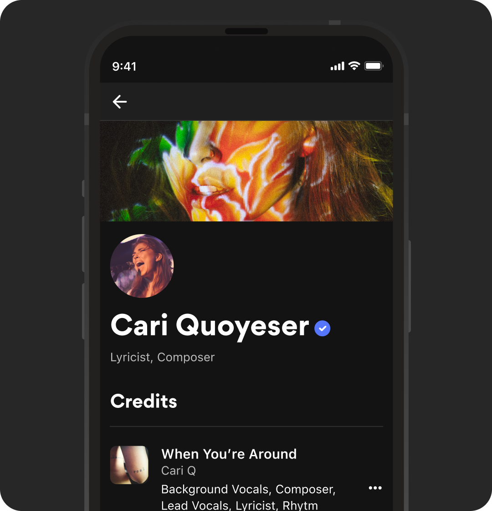
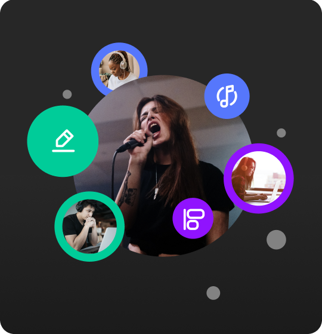

What Musixmatch Pro Offers you
Distribution
Distribute your lyrics everywhere
Make your lyrics accessible to your fans on every phone, tablet, and laptop.
Distribute your verified lyrics on leading online music platforms such as Spotify, Apple, Tidal, and
Amazon Music, as well as Instagram, Facebook, and Google.
Create lyric videos
Create and customize lyric videos for socials
Distribute your verified lyrics on leading online music platforms such as Spotify, Apple, Tidal, and
Amazon Music, as well as Instagram, Facebook, and Google.

Artist Verification
Verify your creations
Verify your artist profile to curate your lyrics autonomously, or to confirm their accuracy if they
have already been added by a trusted member of our community.
Add credits to showcase all the songs you have worked on and get credited for your work.
Sync, Tag and translate
Sync your lyrics with your music
Sync your lyrics line by line and word by word, tag the song structure, add translations, and explore
all the features that we keep releasing for our artists.
Your synced lyrics will be distributed to Spotify, Apple Music, Instagram, and all our partners.

pro paid plans
Outsource lyrics curation to our expers
We will select the best curator available from our pool of experts, based on the language of the song
and genre, to ensure the best output possible so that you can focus on what you love most: making
music.